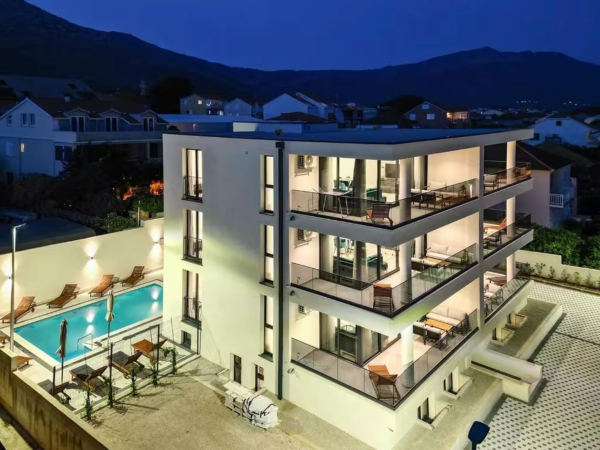

Our place, our Orebić, your holiday.
Sunny Day began with a simple idea: give guests a modern, exceptionally clean and comfortable base from which to enjoy Orebić at an easy pace. Every apartment is designed for real summer living — generous space, a good kitchen, a terrace or balcony, a pool and the sea nearby.
We believe premium hospitality is not about excess, but about details working exactly as they should: a spotless space, quality equipment, restful sleep and a host who is available when needed.